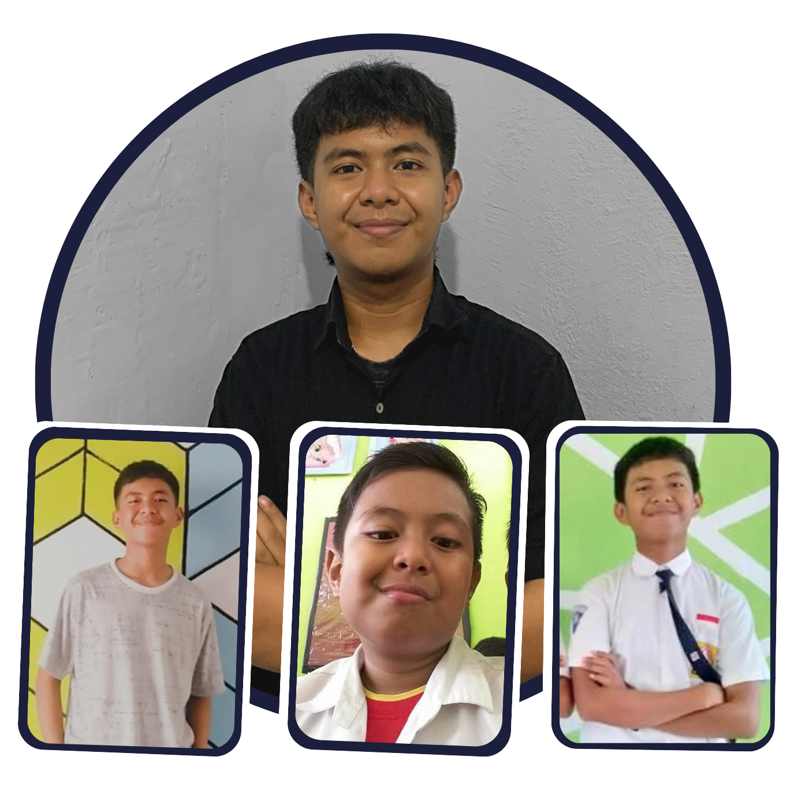

MUH BINTANG PUTRA FAISAL
HALO, SAYA BINTANG. SEORANG KONTEN KREATOR YANG KEBETULAN HOBI FOTO.
SESEORANG YANG LAHIR DI MAMUJU, SULAWESI BARAT. BIASA DIUCAPKAN
SELAMAT PADA TANGGAL 11 JUNI. BERSEKOLAH DI SDN 1 MAMUJU 2010-2016,
SMPN 2 MAMUJU 2016-2019, SMKN 1 RANGAS 2019-2022, DAN SEKARANG
MENJADI MAHASISWA UNIVERSITAS NEGERI MAKASSAR DARI TAHUN 2023 SAMPAI SEKARANG.
